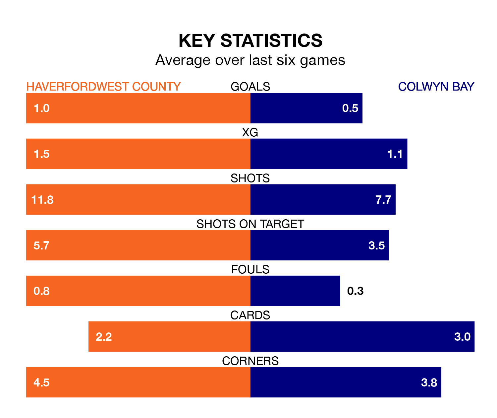

Haverfordwest County host Colwyn Bay in Saturday lunchtime's match at the New Bridge Meadow Stadium looking to bounce back from defeat last time out in the Welsh Premier League.
The Bluebirds, who sit fifth in the league after 30 games, fell to a 1-2 home defeat to Barry Town United on April 5.
They face a Colwyn Bay side who picked up a win in their last match, a 1-0 victory against Pontypridd Town AFC, and who sit zero in the table.
With 32 goals in 30 games so far this season, Colwyn Bay are the league's-3th-lowest scorers with 1.1 goals per game. And they are conceding more than average, letting in 63 goals at a rate of 2.1 per game.
Haverfordwest are also below average scorers, with 1.2 goals per game, compared to a league average of 1.5. They have conceded 1.3 goals per game.
County are in reasonable form in the Welsh Premier League, with three wins and two draws from their last six games.
With a win and two draws over that period, the visitors' form is much worse – they have taken five points from 18, compared to the Bluebirds' 11.
In the last three years, Haverfordwest and Colwyn Bay have played each other on three occasions. Haverfordwest won two of them and they drew once.
Their last meeting was on March 2, when they played out a 0-0 draw.
Updated: 11:20 (UTC), 09/04/24